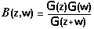
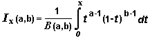
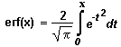
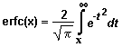
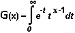
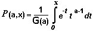
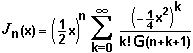
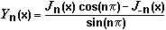

The function returns 1 if x meets the equation 0  x
x
 1. Otherwise the function returns 0.
1. Otherwise the function returns 0.
beta(z,w)
The function returns the result of computation of the Beta Function B(z,w).
If both z and w are equal to 0, the function returns NaN. If either z or w is equal to 0, the function returns +Inf. The result is not defined if z or w is a negative integer.
The function can operate on scalars, arrays, and combinations thereof. The result is produced according to the polymorphism rules. Formally, z and w can have the following data types:
| DBL Number | 1D Array of DBL | 2D Array of DBL |
click here for general information on data types.
The data type of the return value is determined by the polymorphism rules for function with two arguments.
The Beta Function B(z,w) is defined by

, where G is the Gamma Function.
betai(a,b,x)
The function returns the result of computation of the Incomplete Beta Function Ix(a,b).
If a or b is less than or equal to 0, the function returns NaN. If x is greater than 1, the function returns 1. If x is less than 0, the function returns 0.
The function can operate on scalars, arrays, and combinations thereof. The result is produced according to the polymorphism rules. Formally, all the parameters can have the following data types:
| DBL Number | 1D Array of DBL | 2D Array of DBL |
click here for general information on data types.
The data type of the return value is determined by the polymorphism rules for function with two arguments.
The Incomplete Beta Function Ix(a,b) is defined by

, where B is the Beta Function
clip(x ,bound-1 ,bound-2)
The function returns:
| high | if x > high |
| low | if x < low |
| x | otherwise |
, where
high = max(bound-1, bound-2), and low = min(bound-1, bound-2)
x is a value to be coerced, it can have the following data types:
| DBL Number | 1D Array of DBL | 2D Array of DBL |
bound-1 and bound-2 are optional arguments that specify the upper and lower bounds. Both of them, if they are present in a function call, must have DBL Number data type.
By default bound-1 is equal to 1, and bound-2 is equal to 0.
click here for general information on data types.
The function returns a value with the same data type as x. The result is produced according to a rule similar to the polymorphism rules for functions with one argument. Click here for more information.
v = vector(7,3,-1,-5); //v is array {7,3,-1,-5}
v = clip(v, -4, 4); //v is now {4,3,-1,-4}
x = clip(v[0], 2.5); //x is equal to 2.5
erf(x)
The function returns the result of computation of the Error Function erf(x).
The function can operate on scalars and arrays. The result is produced according to the polymorphism rules. Formally, x can have the following data types:
| DBL Number | 1D Array of DBL | 2D Array of DBL |
click here for general information on data types.
The function returns a value with the same data type as x.
The Error Function erf(x) is defined by

erfc(x)
The function returns the result of computation of the Complementary Error Function erfc(x).
The function can operate on scalars and arrays. The result is produced according to the polymorphism rules. Formally, x can have the following data types:
| DBL Number | 1D Array of DBL | 2D Array of DBL |
click here for general information on data types.
The function returns a value with the same data type as x.
The Complementary Error Function erfc(x) is defined by

factr(x)
The function returns the factorial of x. If x is not integer, the function coerces it to the integer to perform computation.
If x is less than 0, the function returns NaN. If x is equal to 0, the function returns 1.
The function can operate on scalars and arrays. The result is produced according to the polymorphism rules. Formally, x can have the following data types:
| DBL Number | 1D Array of DBL | 2D Array of DBL |
click here for general information on data types.
The function returns a value with the same data type as x.
gamma(x)
The function returns the result of computation of the Gamma Function G(x).
The function can operate on scalars and arrays. The result is produced according to the polymorphism rules. Formally, x can have the following data types:
| DBL Number | 1D Array of DBL | 2D Array of DBL |
click here for general information on data types.
The function returns a value with the same data type as x.
The Gamma Function G(x) is defined by

gammai(a,x)
The function returns the result of computation of the Incomplete Gamma Function P(a,x).
If a is less than or equal to 0, the function returns NaN. If x is less than or equal to 0, the function returns 0.
The function can operate on scalars, arrays, and combinations thereof. The result is produced according to the polymorphism rules. Formally, a and x can have the following data types:
| DBL Number | 1D Array of DBL | 2D Array of DBL |
click here for general information on data types.
The data type of the return value is determined by the polymorphism rules for function with two arguments.
The Incomplete Gamma Function P (a,x) is defined by

, where G is the Gamma Function.
The functions compute the Bessel Function of the first kind of integer order.
Implementation: FastFunc.
_j0(x)
_j1(x)
_jn(n,x)
The _j0(x), _j1(x), _jn(n,x) functions return the result of computation of the Bessel Function of the first kind Jn(x) of order 0, 1, and n, respectively.
If n is not integer, the _jn function coerces it to the integer to perform computation.
The functions can operate on scalars and arrays. They produce results according to general polymorphism rules for functions with either one argument (_j0 and _j1) or two arguments (_jn). Formally, x and n can have the following data types:
| DBL Number | 1D Array of DBL | 2D Array of DBL |
click here for general information on data types.
The _j0 and _j1 functions return a value with the same data type as x.
The _jn function returns a value with the data type determined by the polymorphism rules for function with two arguments.
The Bessel Function of the first kind Jn(x) is defined by

, where G is the Gamma Function.
spike(x)
The function returns 1 if x meets the equation 0 x
1. Otherwise the function returns 0.
The function can operate on scalars and arrays. The result is produced according to the polymorphism rules. Formally, x can have the following data types:
| DBL Number | 1D Array of DBL | 2D Array of DBL |
click here for general information on data types.
The function returns a value with the same data type as x.
square(x)
The function returns 1 if x meets the equation 2n x
2n+1, where n is any integer value. Otherwise the function returns 0.
The function can operate on scalars and arrays. The result is produced according to the polymorphism rules. Formally, x can have the following data types:
| DBL Number | 1D Array of DBL | 2D Array of DBL |
click here for general information on data types.
The function returns a value with the same data type as x.
step(x)
The function returns 1 if x is greater than or equal to 0. Otherwise it returns 0.
The function can operate on scalars and arrays. The result is produced according to the polymorphism rules. Formally, x can have the following data types:
| DBL Number | 1D Array of DBL | 2D Array of DBL |
click here for general information on data types.
The function returns a value with the same data type as x.
The functions compute the Bessel Function of the second kind of integer order.
Implementation: FastFunc.
_y0(x)
_y1(x)
_yn(n,x)
The _y0(x), _y1(x), _yn(n,x) functions return the result of computation of the Bessel Function of the second kind Yn(x) of order 0, 1, and n, respectively. If x is less than 0, the functions return NaN.
If n is not integer, the _yn function coerces it to the integer to perform computation.
The functions can operate on scalars and arrays. They produce results according to general polymorphism rules for functions with either one argument (_y0 and _y1) or two arguments (_yn). Formally, x and n can have the following data types:
| DBL Number | 1D Array of DBL | 2D Array of DBL |
click here for general information on data types.
The _y0 and _y1 functions return a value with the same data type as x.
The _yn function returns a value with the data type determined by the polymorphism rules for function with two arguments.
The Bessel Function of the second kind Yn(x) is defined by

, where J is the Bessel Function of the first kind.